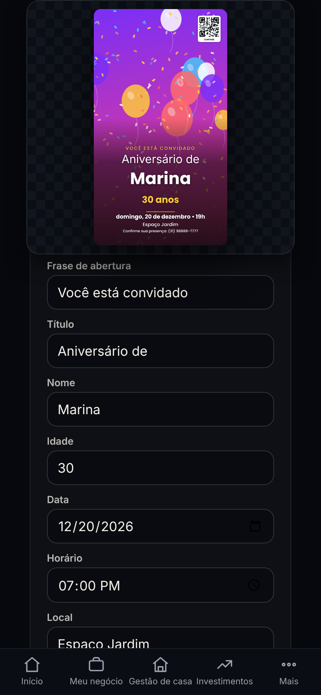
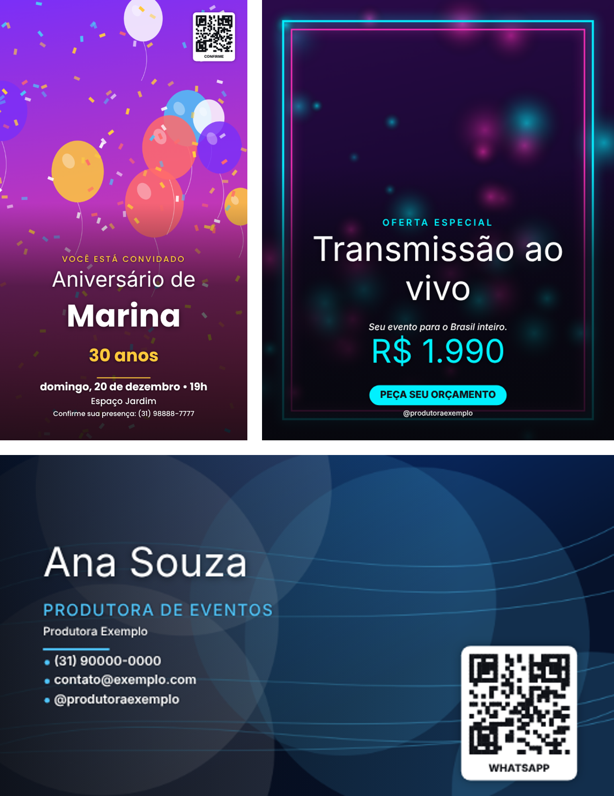

A IA desenha só a arte, sem letras. O app escreve nome, data e local por cima com fontes de verdade — sem erro de português. A foto só sai do aparelho quando você pede para a IA colocar a pessoa na arte, e nada fica guardado.